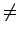
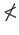
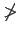

Ungleichungen sind Verknüpfungen zweier algebraischer Ausdrücke durch eins der folgenden Zeichen:
| Typ I | (,,größer``) | Typ II | (,,kleiner``) | |||
| Typ III |  | (,,verschieden von, ungleich``) | Typ IIIa | <> | (,,größer oder kleiner``) | |
| Typ IV | (,,größer oder gleich``) | Typ IVa |  | (,,nicht kleiner``) | ||
| Typ V | (,,kleiner oder gleich``) | Typ Va |  | (,,nicht größer``) |
Gemäß dieser Verknüpfungen können 5 Typen von Ungleichungen unterschieden werden. Die Zeichen unter Typ III und IIIa, IV und IVa sowie V und Va besitzen jeweils die gleiche Bedeutung, so daß sie sich gegenseitig ersetzen lassen. Wenn sich das Zeichen IIIa auf Größen bezieht, für die die Begriffe ,,größer`` oder ,,kleiner`` nicht definiert sind, z.B. bei komplexen Zahlen oder Vektoren, dann läßt es sich durch das Zeichen III ersetzen. In diesem Abschnitt werden nur reelle Zahlen benutzt.